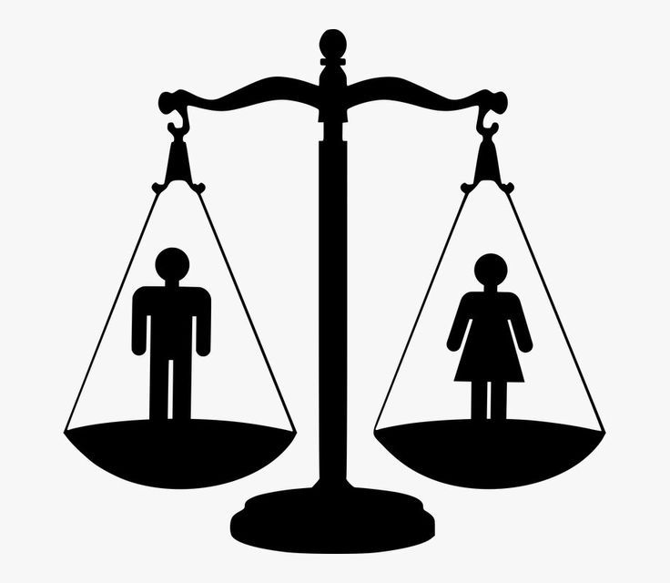
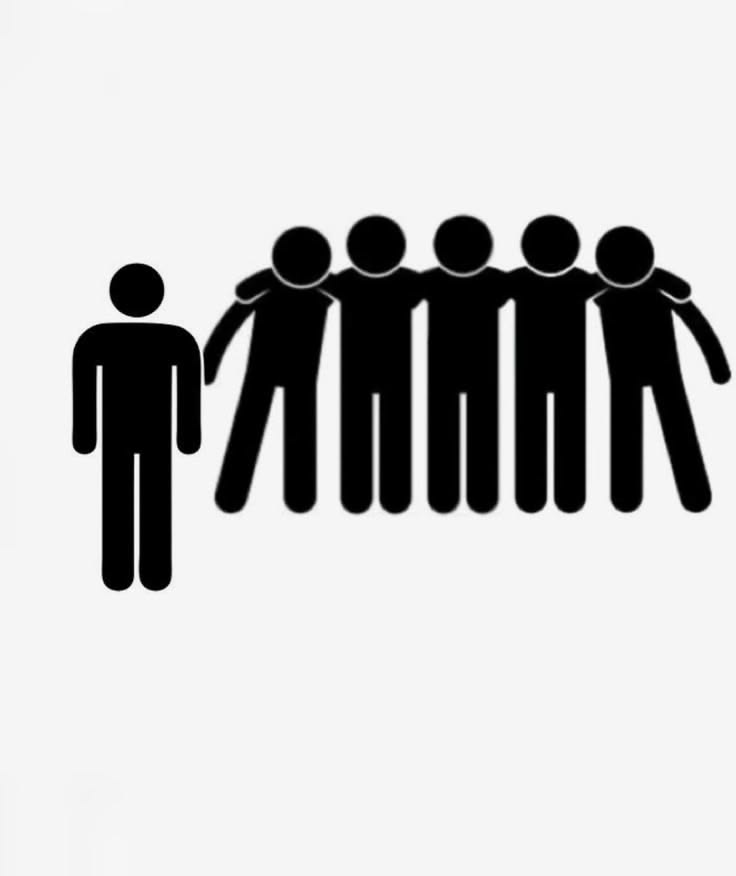

(Het web is van ons allemaal)

Gelijke rechten op het internet
Gelijke rechten op het internet betekent dat iedereen het internet op dezelfde manier moet kunnen gebruiken. Dit geldt voor mensen met een beperking, mensen met een laag inkomen en mensen die minder digitaal vaardig zijn. In de praktijk blijkt dit echter vaak een uitdaging.
Het belang van digitale gelijkheid
De samenleving digitaliseert in hoog tempo. Mensen bankieren, winkelen, studeren en communiceren via het internet. Wanneer het internet niet voor iedereen toegankelijk is, leidt dit tot digitale uitsluiting. Hierdoor kunnen bepaalde groepen niet volledig deelnemen aan de maatschappij, wat ongelijkheid in de hand werkt.

Toegankelijkheid op het web
Toegankelijkheid richt zich op de vraag of een website door iedereen gebruikt kan worden. Voor mensen met een visuele beperking is het essentieel dat een website wordt voorgelezen door een screenreader. Voor dove of slechthorende gebruikers is ondertiteling bij video's noodzakelijk.
Toegankelijkheid betreft niet alleen de visuele vormgeving, maar ook de technische werking achter de schermen. Een website moet bijvoorbeeld volledig te bedienen zijn met een toetsenbord, in plaats van alleen met een muis. De overheid verplicht dit al voor haar eigen websites.
Een goed voorbeeld hiervan is de website van de Rijksoverheid, die speciale voorleesfuncties heeft. Bij veel commerciële webshops ontbreekt deze functionaliteit nog, waardoor mensen met een beperking daar geen aankopen kunnen doen.
Algoritmes en kunstmatige intelligentie
In de digitale wereld spelen algoritmes en kunstmatige intelligentie (AI) een steeds grotere rol. Een algoritme is een reeks regels die een computer volgt. AI-systemen bepalen tegenwoordig bijvoorbeeld wie wordt uitgenodigd voor een sollicitatie, wie een woning toegewezen krijgt en welke advertenties gebruikers te zien krijgen.
Wanneer deze systemen worden geprogrammeerd met vooroordelen, kan er discriminatie ontstaan. Een bekend voorbeeld is een algoritme dat bij sollicitaties vrouwen automatisch afwees, omdat het systeem was getraind op data uit het verleden waarin vooral mannen werden aangenomen. Dit schendt het recht op non-discriminatie en inclusie.
Grenzen aan vrijheid van meningsuiting
Vrijheid van meningsuiting is een essentieel recht, ook online. Dit recht is echter niet onbeperkt. Bedreigingen, discriminatie en het verspreiden van haat zijn strafbaar, zowel op straat als op sociale mediaplatformen zoals Instagram en TikTok. Het internet dient een veilige omgeving te zijn waarin gebruikers niet worden blootgesteld aan strafbare intimidatie of haatzaaiende uitlatingen.
Privacy en gegevensbescherming
Persoonlijke gegevens zijn eigendom van de gebruiker. Websites en technologiebedrijven mogen deze data niet zonder toestemming verzamelen of doorverkopen. Gegevensbescherming is een volledig onderdeel van digitale grondrechten. Gebruikers moeten controle hebben over wat er met hun persoonlijke informatie gebeurt.
Maatschappelijke verantwoordelijkheid
Om digitale gelijkheid te waarborgen, rust er een verantwoordelijkheid op zowel ontwikkelaars als de overheid. Ontwikkelaars dienen websites te bouwen die voldoen aan toegankelijkheidseisen, terwijl de overheid strenger moet toezien op de naleving van deze regels. Daarnaast kunnen gebruikers zelf bijdragen door online haat, discriminatie of ontoegankelijke websites te melden. Digitale rechten gelden immers ook achter het scherm.